Authentication (Allauth)
In our project, we have two ways to authenticate public users by pyhton dependency "Django-Allauth".
Sign up by personal emails:
Public users can sign up by providing username, email and password, then a verification email would be sent to the assigned email account with a unique verification link. After verified, user can login website by username and password or reset password whenever they want to.
Allauth provides all views we needed, so what we need to do is to rewrite the templates and set url paths.
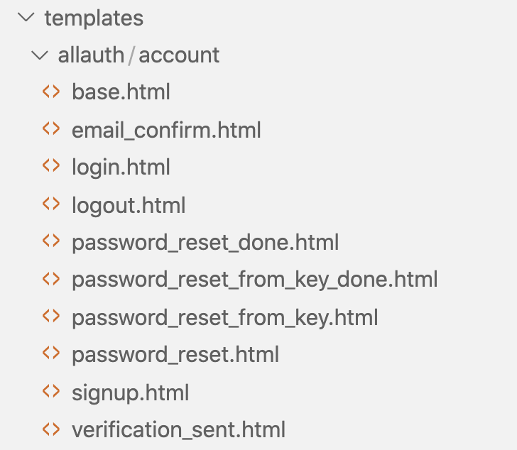Also we set an admin email to send all verification emails, and store these sensitive data in web configuration file.
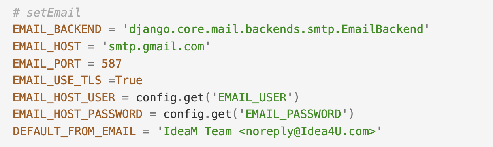Sign up by Gmail account:
Our website provides Google SSO (Single Sign On) for public users, which is a easier way to sign up.
Notification
Whenever users vote ,comment or submit an idea to challenge, the idea author or the challenge moderator would receive an notification massage in the "Notification" tab under user profile.
To implement this, we used the dependency "Django-notification-nq" and customized several signal dispatchers which would send a signal whenever users should be notified.
For example, the picture below is for the signal dispatcher for notifying comments. To send this signal, view functions just need to call "signal_comment" with a comment form as instance.
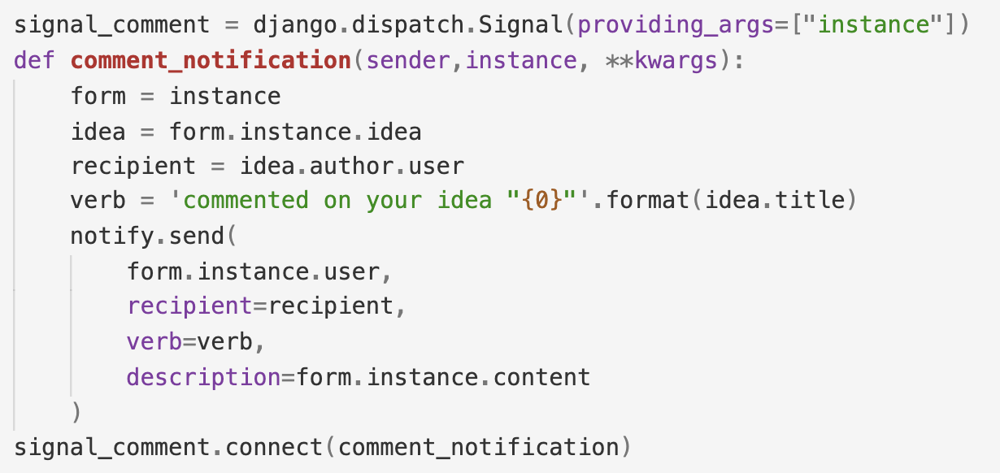Leaderboard (Redis)
Redis - Redis is an open source, in-memory data structure store, used as a database, cache, and message broker.
Settings - To implement leaderboard, we set a redis cache instead of directly reading from memory.
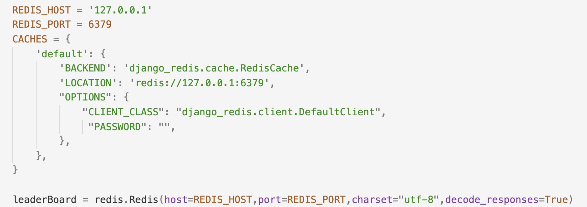"redisRank" function in users.views - We stored data using ordered set {username : score} and wrote several methods to manage (get all ranks, get user score/rank, add/update user score etc.).
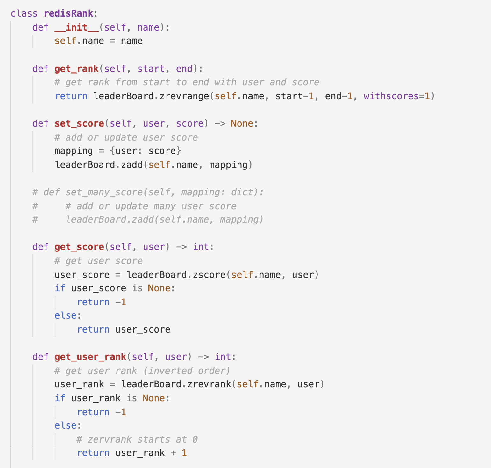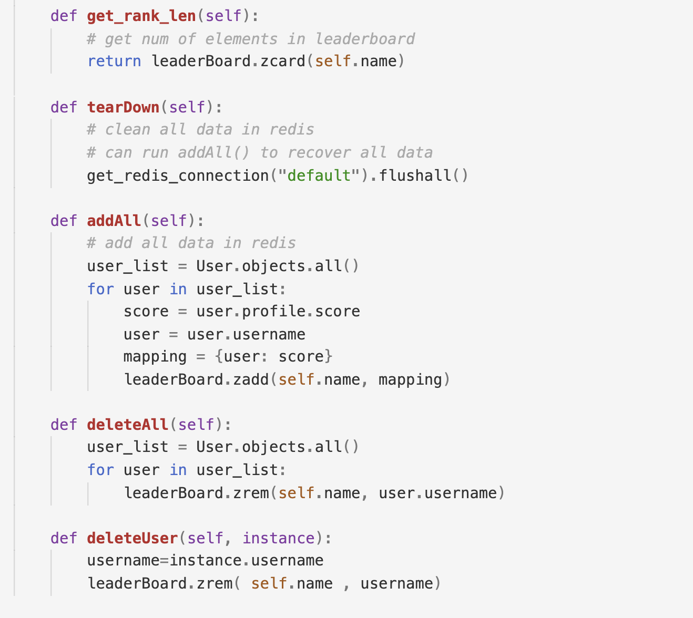
"leaderboard" function in users.views - To get all essential contents by using methods in "redisRank" and send contents to leaderboard.html.
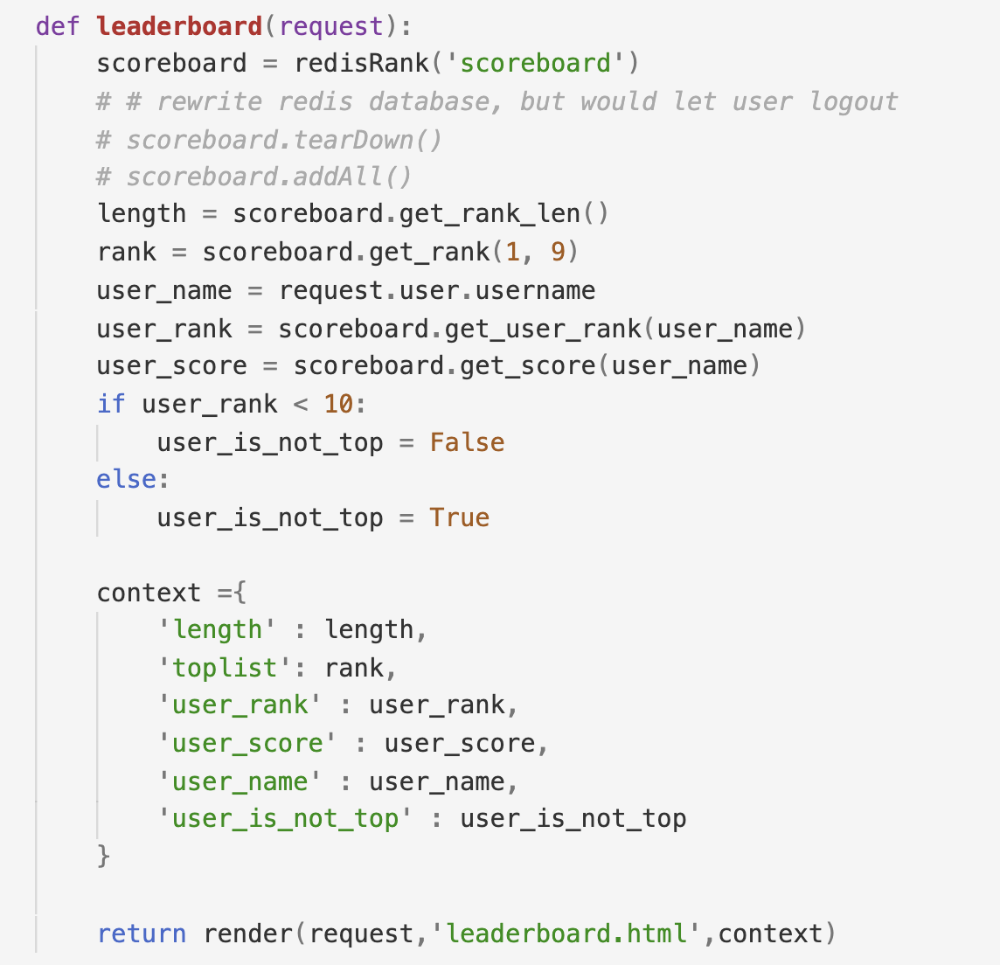Signals - As a new user object is created, a "post_save" signal would be sent to add this new user to redis cache. Also, redis cache would delete users if objects deleted which would send a "pre_delete" signals.
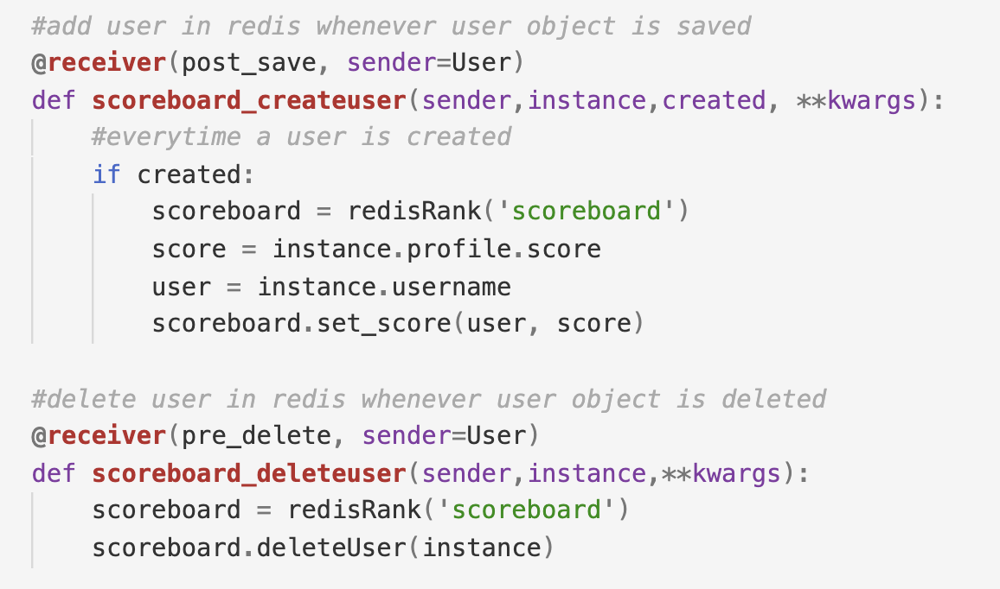"changeScore" function in ideas.views - Users would obtain one point whenever they submit, vote or comment an idea, and also increase one point when their idea gets an vote or an comment. Besides, their score would decrease if they cancel votes. After changing, the new score would be saved in profile and updated on leaderBoard which is a redis database.
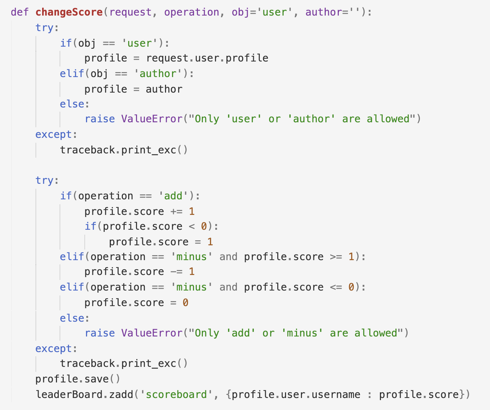UCL SSO (Single Sign On)
By UCL SSO, UCL students and staffs can login our website with their UCL account credentials.
To implement UCL SSO, we used UCL API. We added our project to the API dashboard and set the callback url to our website, getting all needed information for exchange data (including API token, client id, client secret etc.).
Then we wrote a function to exchange data with UCL API three times, and after that, login user according to the user infomation we obtained.
As users click the UCL SSO button in website, they would be redirected to UCL SSO website and log in with UCL credentials if not logged in already. Then UCL SSO website would call back to the callback page in our website which run the "uclsso" function. In the beginning, "uclsso" function runs "receive_callback" function to exchange data, then log in user by "AutomaticUserLoginMiddleware" class after splitting all useful data.
"uclsso" Function
"uclsso" function obtains user personal data, then create or find out user object to login.
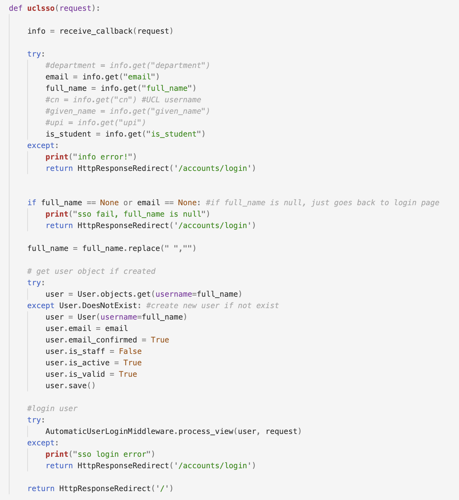"receive_callback" Function
Exchange data first time - User authorised and send "result" and "code":
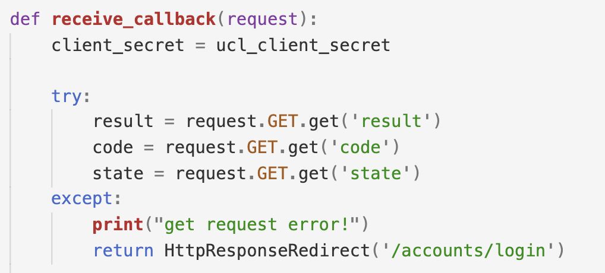Exchange data second time - Obtain a OAuth user token for retrieving personal data and certain API endpoints:
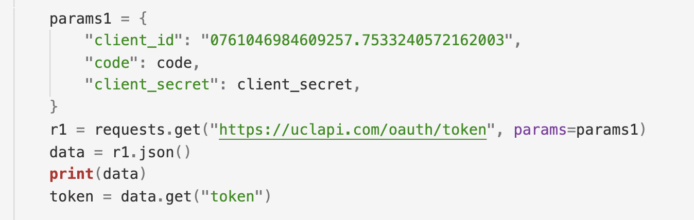Exchange data third time - Obtain personal data and transfer format to a dict:
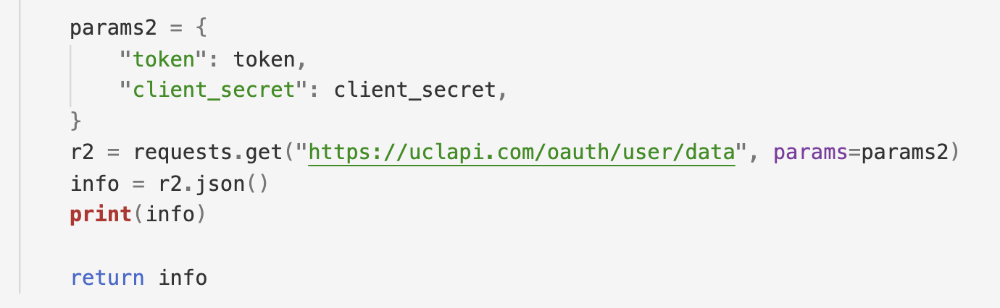"AutomaticUserLoginMiddleware" Class
Finally, authenticate user by allauth backend and login user with sending successful message:
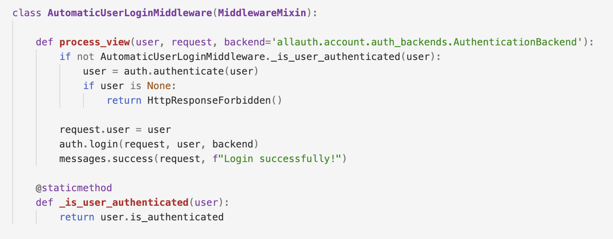Asynchronous Tasks ( signal + Celery + Redis )
For each challenge, we need the challenge state to be automatically set to ‘ENDED’ once the deadline has passed so that no more idea submissions are allowed after that. As it would be inefficient for system to compare deadline to current date every time a request is sent to retrieve challenge instance, after much research, we found a solution which is to use Celery (asynchronous task queue to run tasks in the background) to schedule tasks for changing the state of a challenge at the specified deadline. To pass messages between Django project and Celery workers, we use Redis ( in-memory key-value database) as a message broker.
To implement this, we send a signal to schedule a Celery task (to change challenge state at deadline) everytime a challenge instance is created or updated.
Scheduling task after receiving signal:
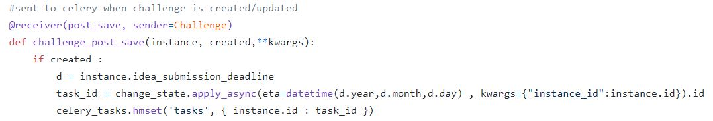
Task to be executed at eta:
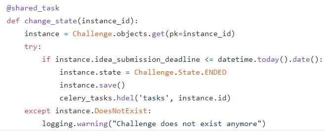If an active challenge deadline is updated, the old scheduled task linked to the instance is revoked and new task is scheduled to update the new eta. To manage the linking of instance to task id, a redis hash data structure is used to store mapping of instance id to task id.
After deadline is updated:
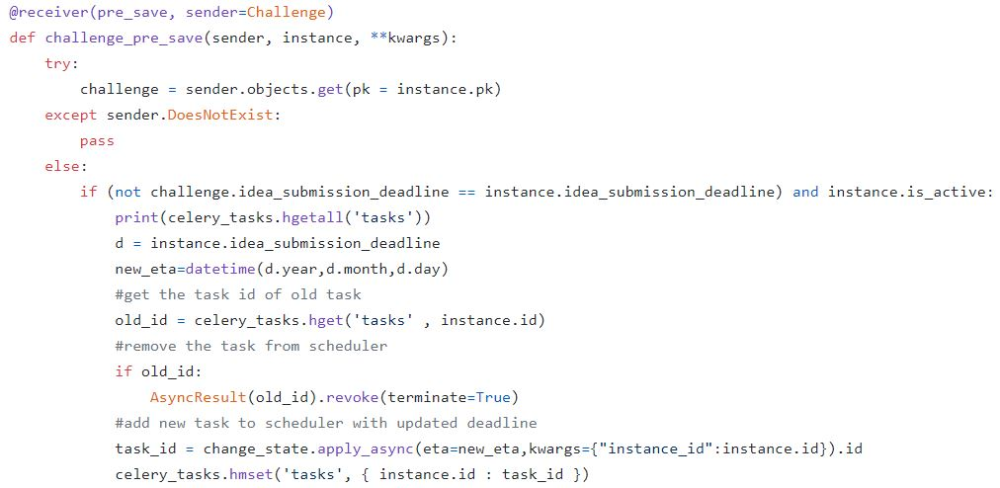Voting and Subscriptions with AJAX button
In idea detail and challenge detail page, user can vote/unvote and subscribe/unsubscribe to challenge respectively. Clicking on vote button adds user to the list of users that voted for that idea.
Ajax (using jquery) allow toggling between vote and unvote which eliminates the need of reloading the page which would be time consuming and unproductive.
Javascript code on the client – When vote button is clicked, browser makes a request. Javascript code generates a XHR object (contains JS data and url to vote callback function on server) which is sent as a request object to the server.
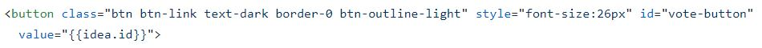
Vote callback function – this view function handles the request by increasing/decreasing vote count of the idea object
and add/remove user from list of voted users, proceeds by sending a success/failure json response which will change state of
like button to blue/black in template if success.
Since the request is asynchronous, the rest of the code executes without interruptions.
CRUD ( Create | Retrieve | Update | Delete )
For each CRUD operation for ideas and challenges, a view that accepts HttpRequest and returns HttpResponse is needed. We started off by using Django generic class-based views. However, due to the complex implementation of multiple forms and fields in the view, we switched to using function-based views.
Create and Update idea/challenge + Forms
For create and update views, we render the same form template, while passing the title context as either ‘Create’ or ‘Update’ to the template variable tag.
The idea and challenge forms uses the ModelForm helper class, which removes redundancy of having to define field types again in the form and rendering individually
in template after already defining them in the model.
Some default form fields were overridden to match our project requirements, such as the select date widget for the date field, checkbox widget to select multiple tags and tinymce rich text editor.
One of the requirements was to allow challenge creator to either pick thumbnail image from a list of image provided or upload their own image.
As Django only allow one input field for each model field, we have to write custom input html tags for the thumbnail image field.
More advanced input methods such as adding new criterias as foreign key other than the available ones also require custom html tags and saving methods in view function.
List, filter and sort ideas/challenges
This is done by constructing querysets in the view function which filter/sort based on the GET request query value parameters ( vote_count, date_posted, tags etc).
Retrieve idea/challenge instance
This is done by passing object primary key (id) in request url. The dynamic field data are displayed by using template variables in the template relating to the context object given in view function that renders the template.
Drafts
If idea/challenge is submitted as draft (using draft button), the date_posted field of the object instance is left null (otherwise filled as current time) and the object will not be viewed by anyone other than the creator.
The list of drafts can be viewed by the user in the drafts tab in profile page. The Manager class is used to return querysets of posted items or drafts.
Review
Review form is implemented as a list of forms with each form mapping a criteria to a score input. Each review instance is linked to a user (reviewer) and the idea being reviewed, along with a set of criteria score pair. Total score for an idea is calculated and displayed to the challenge creator on the idea page.
Permissions
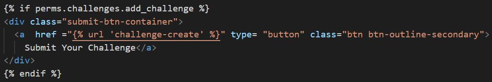This template tag ensures that the Submit Challenge button only appears if user has create challenge permission.
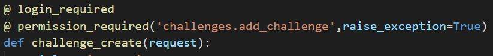Before the challenge create view function, a decorator is used to verify if request user has permission to access create challenge page. If user does not have permission, a 403 exception will be raised.
login_required decorator checks if user is logged in, if request user is not logged in, user will be redirected to the login page before going back to the requested page if login successful.
Using the django admin page, admin can create moderator user group and assign challenge create permission to moderator group. Any users added to moderator group will then have permissions to create challenges and review ideas submitted to that challenge.